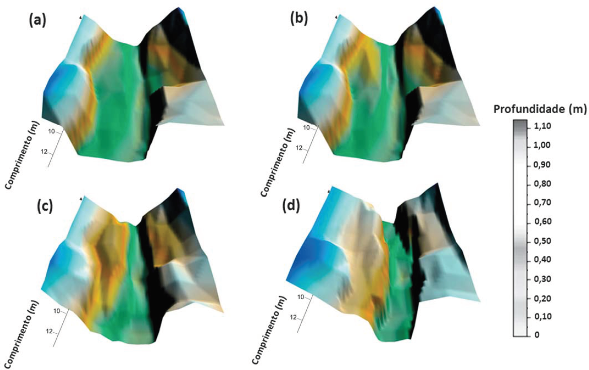

Em estudos realizados em uma microbacia urbanizada, verificou-se que, em aproximadamente 3% dos loteamentos irregulares, havia problemas de erosão. Esse índice poderia ser considerado pequeno, mas, como o material utilizado para aterrar as margens erodidas tem, geralmente, baixa coesão (areia e cascalho) e/ou são entulhos da construção civil, esses materiais são facilmente levados pelas enxurradas para dentro do corpo d'água.
A erosão desses aterros faz com que os moradores sempre os refaçam, pois, com o tempo, eles são novamente erodidos e os sedimentos produzidos são carreados para dentro do corpo d'água. O conjunto formado pelos sedimentos carreados das ruas e aterros durante as chuvas e pelos resíduos sólidos urbanos jogados no corpo d'água aumenta ainda mais a instabilidade do canal.
Batimetrias realizadas em uma seção do corpo d àgua próxima ao exutório da bacia hidrográfica de cabeceira: (a) novembro de 2003; (b) setembro de 2004; (c) janeiro de 2005; (d) setembro de 2005.
POLETO, C. Alterações morfológicas em um canal fluvial urbano no contexto antrópico, social e ambiental: um estudo de caso. Acta Scientiarum, v.33, 2011, p.357-364 (adaptado).
Considerando conceitos hidrológicos e sedimentológicos e que o sistema, durante o período de estiagem, passa de um regime laminar para um regime turbulento durante as precipitações, por se tratar de bacia de cabeceira com grande declividade, avalie as afirmações a seguir.
É correto apenas o que se afirma em